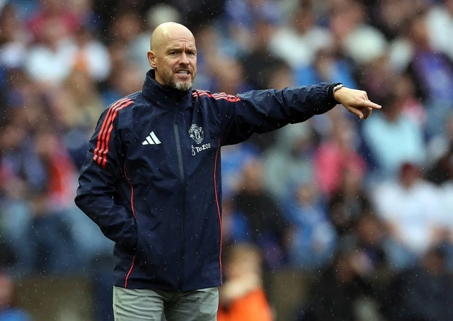

"Tôi không nghĩ là HLV Ange Postecoglou của Tottenham chịu áp lực. Theo quan điểm của tôi, HLV Erik ten Hag của M.U mới là người đang chịu sức ép cực lớn. Đúng là cả Tottenham và M.U đều chưa đạt kết quả như kỳ vọng sau 5 vòng đầu mùa giải, nhưng M.U mới là đội kém cỏi hơn so với lối chơi có phần sáng sủa của Tottenham. Một trận thua nữa tại Old Trafford, tôi nghĩ, chiếc ghế HLV của ông Erik ten Hag sẽ sụp đổ", cựu cầu thủ Paul Merson (Anh) bình luận trên kênh Sky Sports trước trận đấu.
M.U và Tottenham đều có 7 điểm sau 5 vòng đấu giải Ngoại hạng Anh, cùng có 2 thắng, 1 hòa và 2 thua. Spurs tạm xếp trên (vị trí thứ 10) nhờ có hiệu số tốt hơn "Quỷ đỏ": +4 so với 0. Hàng tấn công chính là vấn đề lớn của M.U, dù họ đang sở hữu nhiều cầu thủ chất lượng, nhưng lại có hiệu suất ghi bàn rất kém. Ngoài trận thắng đội hạng 3 nước Anh là Barnsley với tỷ số đến 7-0 tại vòng 3 Cúp Liên đoàn ở các trận còn lại tại các đấu trường quan trọng như Ngoại hạng Anh và Europa League mới đây (hòa Twente 1-1), M.U là đội nằm trong tốp đầu các đội bỏ lỡ cơ hội ghi bàn nhiều nhất trong 5 giải VĐQG hàng đầu châu Âu.
"Vậy cho đến nay, M.U đã làm gì sai?", báo chí Anh đặt câu hỏi. HLV Erik ten Hag thừa nhận: "Chúng tôi cần phải ghi nhiều bàn thắng hơn".
M.U đang có đội hình tốt nhất của họ, trừ Leny Yoro, Lindelof và Luke Shaw vẫn dưỡng thương. Ông Erik ten Hag có thể sẽ đưa tiền vệ Kobbie Mainoo trở lại đội hình chính, sau khi tân binh Manuel Ugarte chưa thể hiện được như kỳ vọng. Tương tự là Garnacho, trong khi Rashford và Amad Diallo chưa rõ có thể chiếm vị trí chính thức hay không. Phía Tottenham, chỉ có một lo lắng là đội trưởng Son Heung-min bị đau nhẹ, đang chờ kiểm tra đến phút chót về khả năng thi đấu.
Ngoài trận đại chiến M.U - Tottenham, trận còn lại vòng 6 giải Ngoại hạng Anh diễn ra giữa Ipswich gặp Aston Villa lúc 20 giờ ngày 29.9. Trận muộn nhất giữa Bournemouth gặp Southampton diễn ra lúc 2 giờ ngày 1.10.